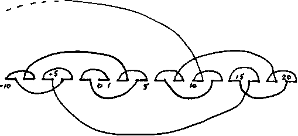

Figure 7. [Item 128] (Schroeppel) A map of the process n -> binary string -> interpret as radix -2, iterated. To convert a number to base -2: (n + ...101010) XOR (...101010) (reversible).
[Retyped and formatted in html ('Web browser format) by Henry Baker, April, 1995.]